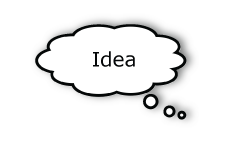
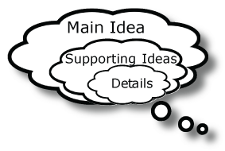

On a reading test, you often see the same question. The question is, "What is the main idea?"
To understand the main idea, you need to understand the topic. The topic is who or what it is about. You also need to understand the events. The events are what is happening.
Every sentence in a paragraph communicates an idea.
All of these sentences become part of a larger idea.
In other words, these smaller ideas become supporting ideas or details to the main idea of the paragraph.
A well written paragraph has a main idea, supporting ideas, and details.
The supporting ideas give more information about the main idea. The details give more information about the supporting ideas
Practice:
Read this paragraph. What is the main idea?
Being a safe driver takes practice. Jordan wants his driver's license now. Some of his friends have driver's licenses. Jordan wants to drive to work. Jordan's father says, "Go to driving school." Jordan doesn't want to go to driving school. He thinks it is too expensive and not necessary. Jordan gets his driver's license and buys a car. He also buys insurance. He is ready to drive to work! Two weeks later, Jordan has a car accident. Jordan is okay, but his car is wrecked. The insurance company tells Jordan, "You are not a safe driver. you must pay more money for insurance. You must also go to driving school. You need more practice."
First, look at the topic sentence. The topic sentence tells the main idea of the paragraph. The topic sentence is at the beginning of the paragraph. It is usually the first sentence, but not always.
Being a safe driver takes practice.
This sentence tells us what this is about.
Next, look at the concluding sentence. The concluding sentence is the last sentence of the paragraph. A good concluding sentence retells the main idea. Look at the last sentence:
You need more practice.
Both the topic and concluding sentences have the owrd 'practice'. We know that 'practice' is important to the main idea.
Supporting Ideas
Details
Being a safe driver takes practice. Jordan wants his driver's license now. Some of his friends have driver's licenses. Jordan wants to drive to work. Jordan's father says, "Go to driving school." Jordan doesn't want to go to driving school. He thinks it is too expensive and not necessary. Jordan gets his driver's license and buys a car. He also buys insurance. He is ready to drive to work! Two weeks later, Jordan has a car accident. Jordan is okay, but his car is wrecked. The insurance company tells Jordan, "You are not a safe driver. you must pay more money for insurance. You must also go to driving school. You need more practice."
The details give more information about the supporting ideas. These T-charts show the relationship between the supporting ideas and details.
| Supporting Ideas | Details |
|---|---|
| Jordan wants his driver's license now. | Some of his friends have driver's licenses. Jordan wants to drive it to work. |
| Supporting Ideas | Details |
|---|---|
| Jordan's father says, "Go to driving school." | Jordan doesn't want to go to driving school. He thinks it is too expensive and not necessary. |

| Supporting Ideas | Details |
|---|---|
| Jordan gets his driver's license and buys a car. | He also buys insurance. He is ready to drive to work! |
| Supporting Ideas | Details |
|---|---|
| Two weeks later, Jordan has a car accident. | Jordan is okay, but his car is wrecked. |
| Supporting Ideas | Details |
|---|---|
| The insurance company tells Jordan, "You are not a safe driver. | You must pay more money for insurance. You must also go to driving school. You need more practice." |
A main idea summary is:
Sample Main Summaries:
Safe drivers must practice. Jordan had a car accident. he must take driver's education.
or
Jordan bought a car, but he had an accident. He must go to school to get more driving practice.
or
Jordan isn't ready to drive a car. He must practice and learn how to drive safely.
The main idea is who it is about and what is happening. The topic sentence and concluding sentence are very important. These sentences communicate the main idea. It is also important to know which supporting ideas and details are the most important. In order to write a good main idea summary statement, you must include some supporting ideas and details. your main idea summary statement must also be in your own words.